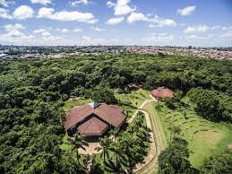
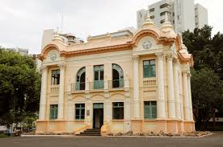

Centro econômico do Triângulo Mineiro, combina modernidade e natureza. Conhecida como "Capital do Cerrado", oferece excelente infraestrutura urbana e diversos parques para lazer.

Maior parque urbano da cidade, com lago, zoológico, área de lazer e espaços para piquenique. Perfeito para famílias, o parque oferece contato com a natureza sem sair da área urbana.
Área verde preservada no coração da cidade, ideal para caminhadas e exercícios ao ar livre. Com trilhas arborizadas e espaços de contemplação, é refúgio de paz para os uberlandenses.


Preserva a história e cultura local através de exposições permanentes e temporárias. O acervo inclui fotografias, documentos e objetos que contam a trajetória da cidade.